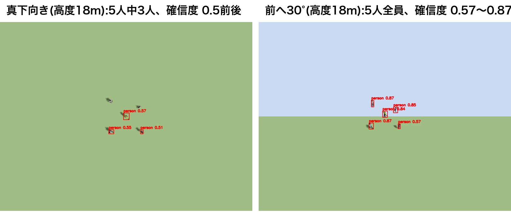

3 章 工夫した点
3.1 漂流予測と拡大方形捜索:どこから探すか
漂流予測
ドローンは高度 18 m に着いた時点で、「流された距離 = 海流の速さ × 通報からの経過時間」を計算し、その分だけ海流の向きにずらした地点を捜索基点にします。
| 項目 | 値 | 中身 |
|---|---|---|
| 通報から出動まで | 600 秒 | パラメータ incident_elapsed_s |
| mission の起動から今まで | 約 15 秒 | アームを待つ時間と、高度 18 m まで上がる時間 |
| 捜索基点までの移動時間の見込み | 11.7 秒 | 通報地点までの距離 117 m ÷ 移動速度 10 m/s |
| 合計 | 約 627 秒 | 0.15 m/s × 627 秒 = 94 m(動画のログの値) |
効果:捜索を始めた時点で、要救助者 5 名の重心までの距離は、通報地点からだと約 107 m、捜索基点からだと約 15 m でした。15 m が 0 にならないのは、5 名が最初から散らばっているからです(1.4 節)。
拡大方形捜索
- 近い所から探す:漂流予測が正しければ、人は基点の近くにいる可能性が一番高い
- 隙間を作らない:脚の間隔 S を撮影幅の 75% にして、隣の脚と 25% 重ねる
- 最初は下流へ:人は下流へ流れ続けるので、まずそちらを見る
国際的な捜索救助のマニュアル(IMO・ICAO の IAMSAR マニュアル)にある標準的な方法の 1 つで、事故の場所がある程度わかっているときに使います。
予報が外れるとどうなるか(限界)
捜索経路は、捜索を始める時点で地図の上に固定されます。一方、人は流れ続けます。例として、予報 0.15 m/s に対して実際の海流が 0.3 m/s だった場合を計算します。
| 項目 | 値 |
|---|---|
| 実際に流された距離(出動時) | 0.3 × 627 秒 ≈ 190 m(ドローンの見積もりは 94 m)→ 基点は集団より約 94 m 上流 |
| 人の列を一番遠くで横切る脚 | 10 本目。下流方向に基点から +96 m(3S)の線を横切る。捜索開始から約 2 分後 |
| そのときカメラが見る範囲(下流方向) | 96 ± 21 m = 75〜117 m |
| そのときの人の集団 | 94 + 0.3 × 120 秒 ≈ 130 m 下流 |
| 結論 | 130 m は 117 m の外 → 集団の中心は見つからないまま捜索が終わる可能性が高い |
「人の列」とは、海流の向きは予報どおりで速さだけが違う場合に、人が並ぶ基点から真下流の線のことです。拡大方形捜索の脚のうち、奇数番目(1, 3, 5, 7, 9)は列と平行に進み、偶数番目(2, 4, 6, 8, 10)が列を横切ります。ドローンが列の真上を通るのは、主に偶数の脚が横切る瞬間です(図 3-2)。
脚の数はパラメータ search_legs: 10 で 10 本と決めているので、列を一番遠くで横切るのは 10 本目です。では、脚を増やせば見つかるでしょうか。
| 列を下流で横切る脚 | 横切る位置 | 時刻(捜索開始から) | カメラで見える範囲 | 人の集団 | 差 |
|---|---|---|---|---|---|
| 2 本目 | 32 m | 約 6 秒 | 11〜53 m | 約 96 m | 43 m 届かない |
| 6 本目 | 64 m | 約 50 秒 | 43〜85 m | 約 109 m | 24 m 届かない |
| 10 本目 | 96 m | 約 123 秒 | 75〜117 m | 約 131 m | 14 m 届かない |
| 14 本目 | 128 m | 約 238 秒 | 107〜149 m | 約 165 m | 16 m 届かない |
| 18 本目 | 160 m | 約 401 秒 | 139〜181 m | 約 214 m | 33 m 届かない |
横切る位置は脚 4 本ごとに 32 m しか進みませんが、脚はだんだん長くなるので、その 4 本を飛ぶ間に人は 32 m より多く流されます(10→14 本目で約 35 m、14→18 本目で約 49 m)。差は 10 本目あたりで一番近づいたあと、また広がります。脚を増やしても集団の中心には追いつけません。経路が地図の上に固定され、人は流れ続けるからです。経路そのものを海流で流せば、人は経路に対して止まって見えるので、脚を増やせばいつか必ず通過します。(集団の上流寄りにいる人は、範囲の端に入って見つかる可能性はあります。)
対策としては、捜索経路そのものを海流で流す(人と一緒に動かす)、予報の誤差を見込んで捜索範囲を広げる、見つけた人の動きから実際の海流を推定し直す、などがあります(5 章)。
3.2 動き続ける人の追跡と、救命浮環の投下
位置を「場所と時刻の組」で持つ
mission は、見つけた人の位置を「いつ、どこにいたか」の組で覚えています。使うときは、そのときの時刻に合わせて流れた分を足します。
例:AI が人を北 −152.0 m・東 −47.0 m(南へ 152.0 m・西へ 47.0 m)と推定した 8 秒後の予測位置は、
- 北:−152.0 + (−0.075 × 8)= −152.6 m(南へ 152.6 m。0.6 m 南へ流れた)
- 東:−47.0 + (−0.130 × 8)= −48.0 m(西へ 48.0 m。1.0 m 西へ流れた)
| 場面 | 使い方 | 使わないと起きること |
|---|---|---|
| 照合 | 新しく見つけた人が、すでに知っている人と同じかを判断する(予測位置から 8 m 以内なら同じ人) | 約 53 秒で 8 m 流れるので、同じ人を「新しい人」と勘違いし、何度も確認しに行く。浮環も同じ人に何個も落とす |
| 接近 | 人の手前 10.4 m(5.8 m)の目的地を計算する | 古い場所へ近づき、カメラに人が写らず、本物の人を「誤検出」として棄却してしまう |
| 投下 | 人の真上の目的地を計算する | 人から離れた場所に浮環が落ちる(1 分後なら 9 m) |
確定位置は「時刻をそろえてから」平均する
| 観測した時刻 | 観測した位置(北, 東) | 今の時刻にそろえた位置 |
|---|---|---|
| 0 秒前 | (−152.6, −48.0) | (−152.6, −48.0) |
| 1 秒前 | (−152.5, −47.8) | (−152.6, −47.9) |
| 2 秒前 | (−152.4, −47.8) | (−152.6, −48.1) |
| 平均 | (−152.6, −48.0) | |
そろえずに平均すると、流れる前の古い位置が混ざり、平均が上流側にずれます。
救命浮環の投下
- 予測位置の真上、高度 6 m で 1.5 秒静止する
- payload が、機体の少し下(高度約 5.6 m)に浮環を出現させる
- 自由落下させる(高さ = 5.6 − ½ × 9.8 × t²)。約 1.1 秒で海面に着く
- 着水後は浮かべたまま、人と同じ海流で流す

3.3 陸上版から引き継いだ 4 つの工夫
どれも「困りごと → 工夫 → 効果 → 代わりに払うもの」の形で整理します。
工夫 1:タイル分割推論
| 困りごと | AI(YOLO)は 640×640 画素の画像しか受け付けない。1280×960 のカメラ画像は半分に縮小され、高度 18 m で 15 画素ほどの人が約 7 画素になり、人だとわからなくなる |
|---|---|
| 工夫 | 画像を 3×3 の 9 枚(1 枚 約 490×370 画素、隣と 2 割重ねる)に切り、1 枚ずつ AI に入れる。人は 15〜19 画素のまま残る。高度 12 m 未満では人が大きく写るので 2×2 に減らす |
| 効果 | 陸上版の実験(高度 10〜20 m):全体を 1 回では 0 人、3×3 では 3 人全員を検出 |
| 代わりに払うもの | AI を 9 回動かすので 1 枚に約 0.2 秒(GPU)。カメラは 1 秒に 30 枚作るが、detector は1 秒に 1 回、一番新しい画像だけを調べる。秒速 7 m で進んでも、カメラは前方約 50 m を写しているので、同じ場所が 5〜7 回は調べられ、見落とさない。計算上は 1 秒に 4 回調べられるが、同じ GPU で Gazebo の描画もしているので余裕を見た |
工夫 2:カメラを 30° 前へ傾ける

| 困りごと | 真下からでは、立っている人や立ち泳ぎの人は頭と肩しか写らず、確信度が 0.5 前後にとどまる |
|---|---|
| 工夫 | カメラを真下から前へ 30° 起こした機体を作り、人を斜め上から見る |
| 効果 | 陸上版:真下では 6 人中 3 人を見逃したが、30° では全員を検出。海難救助版:胸まで水中の人も確信度 0.5 以上で検出 |
| 代わりに払うもの | 画像の上のほうは遠くを写すので、位置の誤差が大きくなる。そのため 40 m より遠い検出は使わない(工夫 4 の図 3-9) |
工夫 3:2 段階確認
| 困りごと | AI はブイや浮いている木材を人と見間違えることがある。そのまま浮環を落とすと、浮環を無駄にし、本当の人への救助が遅れる |
|---|---|
| 工夫 | 図 3-7 のように 2 回に分けて判定する |
| 効果 | 3 回の飛行で誤検出の候補は計 2 件。どちらも 2 回目で棄却し、人ではないものに浮環を落としたことはない |
| 代わりに払うもの | 候補ごとに、降りて確かめる時間が 10 秒ほどかかる |
工夫 4:機体の傾きを考えて位置を計算する
| 困りごと | 前進中、機体は機首を約 10° 下げて傾く。カメラも一緒に傾き、実際には真下から 40° 前を見ている。いつもの 30° として計算すると約 5 m ずれる |
|---|---|
| 工夫 | detector は PX4 から機体の傾き(前後・左右・向き)を受け取り、カメラが実際に向いていた方向で計算する。AI の処理に約 0.2 秒かかる間にも機体は動くので、画像を受け取った瞬間の位置と傾きを保存しておき、その値で計算する |
| 効果 | 確定位置の誤差は平均 0.45〜0.65 m |
2 次元の画像から、どうして位置(距離)がわかるのか
画像だけでは距離はわかりません。距離を決められるのは、人は平らな海面(高さ 0 m)にいる、ドローンの高度と傾きはわかっている、という 2 つの前提があるからです。画像の 1 つの画素は「ある方向」に対応し、その方向に線を伸ばすと、海面のどこか 1 点にぶつかります。それが人の位置です。
| 写っている場所 | ずれ |
|---|---|
| 画像の中央(前方 10 m) | 約 0.4 m |
| 画像の上端(前方 54 m) | 約 3.1 m |
遠くほど、わずかな角度の誤差が大きな距離の誤差になります。そこで、ドローンから 40 m を超える位置は捨てています(detector_node.py の max_range)。なお、この計算は「人が平らな海面にいる」前提に頼るので、船の上に立っている人などは位置がずれます。
3.4 公平な評価:どうやって採点したか
| ファイル | 出力するプログラム | 形式 | 書かれていること |
|---|---|---|---|
| mission_*.json | mission(頭) | JSON(着陸時に 1 回書き出す) | 確定した時刻と推定位置、投下した時刻 |
| truth_*.jsonl | truth_logger | JSON Lines(0.5 秒ごとに 1 行追加) | 要救助者と浮環の本当の位置 |
mission(頭)から出力した JSON ファイルの、T1 の部分(3 回目の飛行):
{ "id": "T1", "status": "confirmed",
"first_north": -147.29, "first_east": -30.97, "first_t": 1791880489.39, "first_conf": 0.836,
"est_north": -148.0, "est_east": -32.13, "est_t": 1791880498.60,
"confirm_t": 1791880498.60, "n_confirm": 3, "max_conf": 0.829,
"drop": {"t": 1791880503.40, "north": -148.23, "east": -32.6, "alt": 6.08, "ring": "lifering_1"} }
| 項目 | 意味 |
|---|---|
| first_* | 最初に候補として見つけたとき(高度 18 m)の位置・時刻・確信度 |
| est_* | 確定したときの推定位置と時刻(高度 10 m の観測を平均)。採点で比べるのはこの値 |
| n_confirm、max_conf | 確認中に見えた回数(3 回)と最大の確信度 |
| drop | 投下した時刻・機体の位置・高度・浮環の名前 |
truth_logger のファイル(1 行に 1 つの JSON。t が UNIX 時刻、poses が [北, 東]):
{"t": 1791880461.618, "poses": {"person_P1": [-152.913, -47.255], "person_P2": [-166.913, -33.254], ...}}
{"t": 1791880462.119, "poses": {"person_P1": [-152.950, -47.319], ...}}
採点の手順(tests/evaluate_mission.py):
- JSON ファイルから、T1 の確定時刻(30.9 秒)と推定位置を読む
- truth_logger の記録には 30.9 秒ちょうどの行がないので、前後 2 行の間を補って(補間して)本当の位置を求める。例:10.0 秒に北 −152.55 m、10.5 秒に北 −152.59 m なら、10.3 秒は 60% の地点なので −152.55 + (−0.04) × 0.6 = −152.574 m
- その時刻に T1 の一番近くにいた要救助者(P3)が 5 m 以内なら「T1 は P3 を見つけた」とする。2 つの位置の距離(0.32 m)が位置の誤差
- 投下の 2 秒後(37.7 秒。浮環は約 1.1 秒で着水するので余裕を見た)について、浮環と P3 の本当の位置を同様に求め、その距離(0.21 m)を浮環と人の距離とする
どの要救助者とも 5 m 以内で対応しない確定は「誤った確定」として数えます。T 番号は mission が見つけた順に付けた候補番号(棄却した候補にも付く)、P 番号は要救助者の本当の名前で、この対応づけは飛行ごとに変わります(3 回目は T1 = P3)。